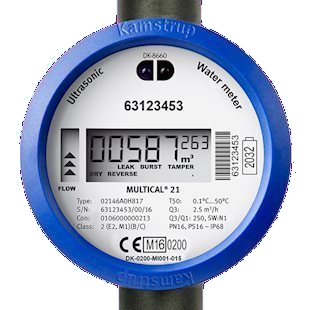

{% csrf_token %}
C.W.:
H.W.:
{% include 'blog/utilities_header.html' %} {% if not current_common_bill == None %} {% for user_line in last_utility_table %} {% if request.user == user_line.user %}
{% include 'blog/utilities_container.html' %}
{% else %}
{% include 'blog/utilities_container.html' %}
{% endif %} {% endfor %} {% include 'blog/utilities_totals.html' %} {% endif %}